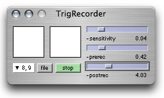

ixiQuarks : TrigRecorder

| TrigRecorder |
| The Trig Recorder makes it possible to record to a soundfile ONLY WHEN there is sound happening. This can save vast amounts of disk space and time when listening to a silent sound file. (Useful when spying for example). The left box shows when signal is coming in. The sensitivity slider controls the limits of that. The right box displays a red circle when the recorder is recording. The "prerec" controls how long BEFORE the sound in time it starts to record (the sound goes through a delay which makes it possible to record back in time). The "postrec" slider controls how long AFTER the sound event it records (so if there is low sound following the sound event (reverb for example) the recorder will record for the time according to the value of that slider. |